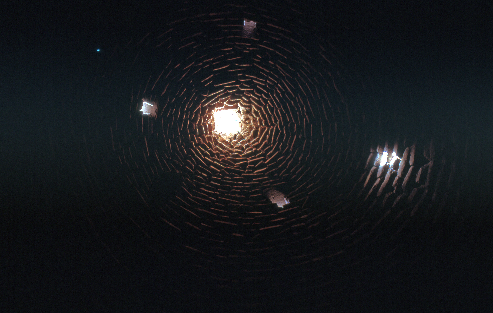

Haran (Harran)

- Find Name
- Haran (Harran)
- Description
- A city of upper Mesopotamia on the Balikh, a tributary of the Euphrates, at modern Harran in southeastern Turkey, about 40 km south of Sanliurfa. Excavations since the 1950s have revealed a city of some 100 hectares with a central tell, a long history as a caravan and cult centre, and a famous temple of Sin, the moon-god, rebuilt by kings from Shalmaneser to Ashurbanipal and lavishly restored by Nabonidus. Harran lay on the trade route between Mesopotamia and the west, and its moon-god cult linked it closely with Ur, the other great Sin city. The visible beehive houses pictured are much later, Islamic-period dwellings, not patriarchal homes, and are not claimed as such.
- Historical Period
- Bronze Age to Islamic, 3rd millennium BC onwards
- Evidence Class
- Direct
- Interpretations
- Scholars agree modern Harran is biblical Haran; the name survives in cuneiform as Harran, and the identification is not seriously contested. No excavated house can be tied to Abraham, Terah, or Jacob, and none is claimed here — the entry is for the city, its route, and its cult, which frame the patriarchal narratives.
- Alternative Names
- Harran; Charran (Acts 7:2, 7:4, KJV)
- Related Places
- Related Books
- Related Events
- Related People
- Scripture Illuminated
- Biblical Significance
- Haran is the hinge of Abraham's story: Terah's family stopped there on the way from Ur to Canaan, Terah died there at 205, and Abram, aged 75, departed from Haran at God's call (Genesis 11:31-32; 12:4-5). It is also the city of Nahor to which Abraham's servant travelled for Rebekah (Genesis 24:10), and the refuge where Jacob fled to Laban (Genesis 27:43; 29:4). Joshua's charge that Terah's household 'served other gods' beyond the River (Joshua 24:2) fits a city whose god was the moon.
- Artifact Date
- Occupied from the Early Bronze Age; moon-god temple of Sin, rebuilt by successive kings to Nabonidus
- Current Location
- In situ, Turkey (visible remains include the citadel, city walls, and later beehive houses)
- Date Discovered
- Surveyed by T. E. Lawrence and Seton Lloyd; serious excavation from 1951 under D. S. Rice
- Discovery Location
- Harran, Sanliurfa Province, southeastern Turkey, on the Balikh River
- Timeline Era
- Primeval / Patriarchs
Awaiting Review Not yet checked against scholarly sources. Treat its claims as provisional until this entry is reviewed. About verification
Last reviewed: not yet reviewed